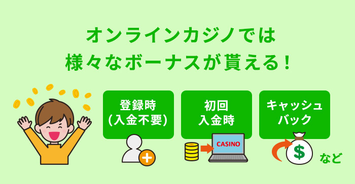
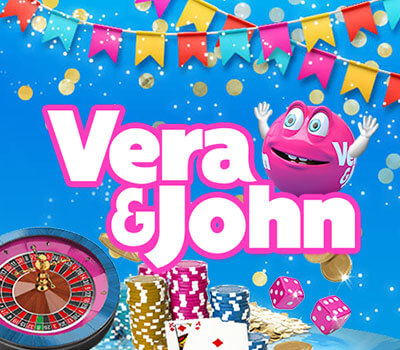
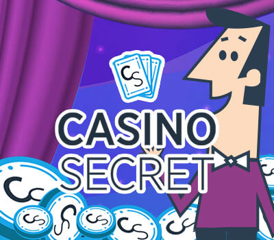
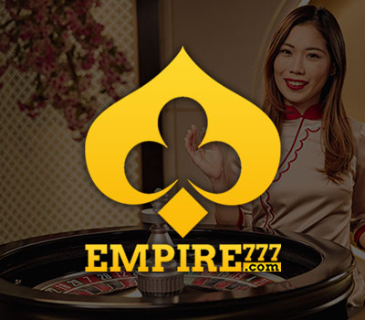
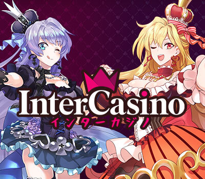
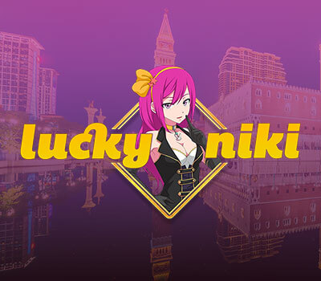
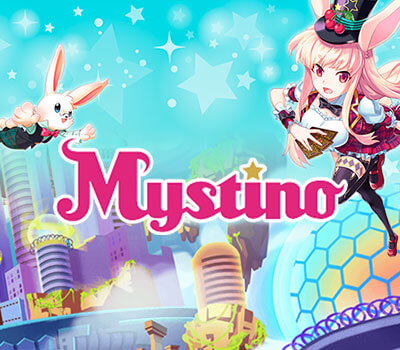
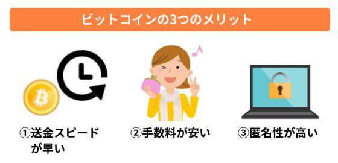

オンラインカジノとは？
初心者が安心して始めるための基礎講座

オンラインカジノとは？
初心者が安心して始めるための基礎講座

最終更新日：
オンラインカジノ特有のサービス「ボーナス」は、一定の条件をクリアするとゲームで利用できる無料チップがもらえるという、お得なシステムです。
ボーナスには様々な種類があり、例えば入金時に貰えるボーナスや、キャンペーンで貰える限定モノもあります。
ただし、ボーナスで稼いだ勝利金を出金するためには、一定の条件をクリアしなければならない等、定められたルールが存在します。
ルールを守らないとせっかく貰ったボーナスが没収されてしまうこともあるので、必ずボーナスルールを確認するようにしましょう。
ここではボーナスの種類や、把握しておきたいルールについて紹介します。
 著者：KENJI
著者：KENJIオンラインカジノではアカウントを登録した時など色んな場面でボーナスを貰うことができますが、ボーナスの種類や使い方を知っていないと規約違反などを問われてしまうことがあります。
このページでは、カジノサイトで提供されているボーナスの種類や賭け条件、禁止ゲームといったボーナスに関する基礎知識を掲載しています。
ボーナスの違いや大体どのくらいのボーナスが貰えるのかも紹介していますので、気になるボーナスがあればチェックしてみてくださいね。
オンラインカジノ初心者ナビでは、「ボーナスが豊富」「人気がある」など5つの基準からおすすめの優良カジノサイトを3つ紹介しています。ボーナス獲得額や出金条件別におすすめのカジノも紹介しています。
【2023年最新】おすすめオンラインカジノランキング
まずボーナスのルールの前に、ボーナスとは「どのような時に貰えるのか？」「どれぐらい貰えるのか？」等、ボーナスの基本について説明します。
オンラインカジノで貰えるボーナスは、アカウントを作成するだけで貰えるものから、入金時に貰えるものまで、その種類はさまざまです。
ここでは、多くのオンラインカジノで採用されているボーナスや、当サイトで紹介しているオンラインカジノで貰える珍しいボーナスを一覧紹介します！
入金不要ボーナスはオンラインカジノでアカウントを作成した時に付与されるボーナスです。
「登録ボーナス」「口座開設ボーナス」とも呼ばれており、入金なしで貰えるためゲームのお試しプレイに最適です。
ボーナス額は10ドル～40ドル程度に設定されている場合が多く、興味のあるゲームを一度試すのにちょうどいい金額です。
リアルマネーを入金する前にゲームを試してみたい方は、入金不要ボーナス（登録ボーナス）を活用するとよいでしょう。


ベラジョンカジノでは、入金不要ボーナスとして「Golden Ticket」フリースピンが貰えます。当サイトを経由して登録すると通常50回→限定550回にアップします。
少しでも多くの入金不要ボーナスを使って試しに遊びたいという人にはおすすめです！
初回入金ボーナスは、オンラインカジノ登録後、初めて入金した時に付与される通常より内容が豪華なボーナスです。
「ウェルカムボーナス」とも呼ばれ、ほとんど全てのオンラインカジノで受け取ることができます。
初回入金ボーナスの大半は、「入金額の〇％」という形で付与されます。
たとえば「初回入金ボーナス100％」と書かれている場合は、登録して初めての入金時に100ドル入金すると100ドルのボーナスチップが進呈され、合計200ドルのチップがアカウントの口座内に入ることになります。
オンラインカジノによっては初回～3,4回目の入金まで特典が貰える場合や、ボーナスの他にもフリースピンが貰える場合もあります。
入金額によっては貰える金額も大きくなるため、人気のあるボーナスです。


ラッキーニッキーの初回入金ボーナスは、入金額の100%ボーナスとフリースピンの2種類から好きな方を選ぶことができます。
初回入金でボーナスを選べるようになっており、最大で$1000、または最大$500のキャッシュバックが受け取れます。
初回入金ボーナスが複数用意されており、自分で選べるカジノサイトは少ないため必見です。
フリースピンボーナスは、入金すると特定のスロットで遊べるフリースピンが付与されるボーナスです。
日替わりのキャンペーンやメルマガなどで案内されている場合が多く、貰えるかどうかはプレイ状況とタイミング次第といったオンラインカジノが殆どです。
入金額やキャンペーンによって、20～200回程度のフリースピンが付与され、特定のスロットを無料で遊ぶことができます。
プレイヤーが新作ゲームをプレイする時などによく利用されます。
フリースピンとは？オンラインカジノのスロットで貰う方法・使い方


ミスティーノは、入金すると毎日フリースピンボーナスを受け取ることができます。
どのスロットのフリースピンが貰えるかは日替わりになっており、当日までのお楽しみ！
ミスティーノのボーナスは賭け条件が設定されていないため、勝ったら即出金することができます。
スピンクレジットは、テーブルゲームやライブカジノなど特定のゲームを無料が遊べるボーナスです。
主にベラジョンカジノ、インターカジノで獲得することができます。
ショップで購入して入手することが大半ですが、新規登録やキャンペーンで貰えることもあります。
利用できる対象ゲームはその時々で異なりますが、テーブルゲームやライブカジノで使える場合が多いです。
過去には花魁ドリームをはじめとしたJTG社のスロットで使えるスピンクレジットが交換できたこともありますので、スロットユーザーの方も要チェックです。
ベラジョンカジノは、夏祭りなどの時期イベントでスピンクレジットを入手できたり、いつもよりお得にスピンクレジットを購入することができます。
また、ベラジョンカジノはオンラインカジノ業界の中でもイベントが豊富です。
スピンクレジット関連のキャンペーンも他のカジノサイトより開催頻度が高くなりやすいためスピンクレジットを利用したいならベラジョンカジノがおすすめ！
キャッシュバックボーナスは、オンラインカジノで賭けた金額の一部が戻ってくるボーナスです。
ゲームに負けた時の補償にもなるため、負けて資金を全て失いたくない人に好まれています。
付与条件はオンラインカジノによって異なり、以下のようなパターンがあります。
【ミスティーノ】サプライズキャッシュバックはいつもらえる？金額や出金条件
負けた場合のみキャッシュバックされる場合もあれば、賭け金の一部が蓄積されどこかのタイミングで返ってくる場合も。
また、ビットカジノではプレイヤーのランクを上げると貰える景品（マイルストーン）の中にキャッシュバックが含まれています。


カジノシークレットは、初回入金で50％、2回目以降の入金でもプレイ状況に応じて負けた金額の一部がキャッシュバックされます。
ゲームで負けてしまったとしても一部のお金が返ってきますので、負けても無一文にならない安心感があります。
また、キャッシュバックは現金で付与されるためすぐに引き出せるのも魅力的です。
リベートボーナスはゲームの勝敗に関係なく、期間中にベットした賭け金の一部が返ってくるボーナスです。
常設ボーナスが多く、還元率は低めですがゲームで遊ぶと常に一定額が返ってくるのが特徴です。
カジノサイトによって1日、1週間、1か月などの対象期間が設定されており、期間中にベットした合計金額の数％が後日還元されます。
例えば、「期間が毎週月曜日～日曜日」「付与は翌火曜日」と定められていた場合は、ゲームの勝敗に関係なく月～日曜日にベットした金額の一部が火曜日に返ってきます。
VIPランクによって変動する場合もありますが0.3％～1.3%程度の還元率となっている場合が大半で、沢山資金を賭けるハイローラーの方に人気のボーナスです。
キャッシュバックとの違いはほぼありませんが、キャッシュバックのように「負けた時に還元」「条件を達成したら還元」といった条件がなく、ゲームで遊ぶだけでお金が返ってくる仕組みになっている場合がほとんどです。


エンパイアカジノのリベートボーナスはスロットが0.8～1.28%、ライブカジノとテーブルゲームは0.5～0.7％の賭け金が返ってきます。
VIPではない通常プレイヤーがスロットで0.8％のリベートボーナスを貰えるのは業界内でもかなり高額でお得！
リベートボーナスは申請が必要ですが、1週間単位で毎週受け取ることができます。
リロードボーナスは、入金した金額に応じて受け取れるボーナスです。
「入金ボーナス」とも呼ばれており、ほとんどのオンラインカジノで用意されています。
貰えるボーナス額は「入金額の〇％」となっており、プレイヤーの方で入金額やボーナス額を調整できるのが特徴です。
ベラジョンカジノのビギナーズボーナス徹底解説！貰い方・利用時のルールや注意点
カジノサイトによって、常設ボーナスで用意されている場合もあればキャンペーンで不定期に利用できる場合もあります。
リロードボーナスの還元率は、カジノによって異なりますが大体下記の程度となります。
リロードボーナスの場合、「最低入金額」「最高入金額」「最高ボーナス額」などが設定されている場合もあります。
入金してボーナスを獲得したい方は一度規約に目を通しておきましょう。


インターカジノのリロードボーナスはキャンペーンとしてメルマガなどで配信されています。
常に利用できないのは難点ですが、入金額に対する還元率が高めでリロードボーナスが貰える他のオンラインカジノより出金するための条件も易しめです。
獲得したボーナスは全てのゲームで使えるため、軍資金の足しにすることができますよ。
紹介したボーナスの他にもオンラインカジノには様々なボーナスが用意されています。
プレイヤーに合わせて内容が大きく異なるボーナス、導入されているオンラインカジノが少ないボーナスや、カジノサイトのオリジナルボーナスなど下記のようなものがあります。
「お誕生日ボーナス」は、自分のお誕生日にお得なボーナスを貰うことができます。
内容はサイトによって大きく異なり、ゲームのプレイ状況やプレイヤーの趣向に合わせてボーナスを付与してくれる場合もあります。
プレイヤーによって特典が異なるためサイト内では公開されていない場合が多いですが、多くのオンラインカジノに用意されています。
ボーナスの案内がなくてもお誕生日当日にサポートに連絡をすることで用意してもらえる場合もあるようです。
入金でいつもより高額、または出金の条件が易しいボーナスを貰えるのか？または無料でボーナスが貰えるのか？など詳しい内容は各サイトのサポートに問い合わせてみましょう。
「お友達紹介ボーナス」は紹介URLを送ってお友達がオンラインカジノに登録→入金（またはゲームにベット）してくれたらボーナスが貰えます。
エルドアカジノなどで獲得することができるボーナスです。
ボーナス獲得条件の他にもボーナスを受け取るのは「自分だけ」なのか「自分とお友達」なのかなどカジノサイトによって異なります。
せっかくお友達を紹介するなら自分もお友達もボーナスを受け取れるサイトを選びたいですね。
エンパイアカジノで獲得できる独自のボーナスが「幸運のマネーシンボル」となります。
指定のスロットを回してリール中央にマネーシンボルが停止したら、マネーシンボルに書かれた数字分のボーナスを50USDまで受け取ることができます。
毎日30USD以上入金することでスロットを回すことができ、運試しのゲーム感覚でチャレンジできるユニークなボーナスです。
ボーナスカップ・リチャージボーナスは、カジノからの指定の金額を入金することでボーナスを獲得することができます。
ベラジョンカジノ・インターカジノで獲得でき、それぞれ「ボーナスカップ」「リチャージボーナス」と名前が異なりますが、内容は同じものとなります。
リロードボーナス（入金ボーナス）との違いは、ボーナスカップは入金額・ボーナス額が決まっているという点です。
リロードボーナスは「入金額の〇％」とされており、プレイヤー側で入金額を選ぶことができます。2つのボーナス額の例は下記となります。
「$200以上一気に入金したい」「ボーナスが$100欲しい」などの希望がある方はリロードボーナスを利用しましょう。
このほかにも、オンラインカジノによってさまざまなボーナスが用意されています。
中には期間限定のボーナスなどもありますので、オンラインカジノのボーナスは見逃さないよう、こまめにサイトを確認しておきましょう。
まずボーナスのルールの前に、ボーナスとは「どのような時に貰えるのか？」「どれぐらい貰えるのか？」等、ボーナスの基本について説明します。
オンラインカジノで貰えるボーナスは、アカウントを作成するだけで貰えるものから、入金時に貰えるものまで、その種類はさまざまです。
ここでは、多くのオンラインカジノで採用されているボーナスや、当サイトで紹介しているオンラインカジノで貰える珍しいボーナスを一覧紹介します！
入金不要ボーナスはオンラインカジノでアカウントを作成した時に付与されるボーナスです。
「登録ボーナス」「口座開設ボーナス」とも呼ばれており、入金なしで貰えるためゲームのお試しプレイに最適です。
ボーナス額は10ドル～40ドル程度に設定されている場合が多く、興味のあるゲームを一度試すのにちょうどいい金額です。
リアルマネーを入金する前にゲームを試してみたい方は、入金不要ボーナス（登録ボーナス）を活用するとよいでしょう。
ベラジョンカジノでは、入金不要ボーナスとして「Golden Ticket」フリースピンが貰えます。当サイトを経由して登録すると通常50回→限定550回にアップします。
少しでも多くの入金不要ボーナスを使って試しに遊びたいという人にはおすすめです！
初回入金ボーナスは、オンラインカジノ登録後、初めて入金した時に付与される通常より内容が豪華なボーナスです。
「ウェルカムボーナス」とも呼ばれ、ほとんど全てのオンラインカジノで受け取ることができます。
初回入金ボーナスの大半は、「入金額の〇％」という形で付与されます。
たとえば「初回入金ボーナス100％」と書かれている場合は、登録して初めての入金時に100ドル入金すると100ドルのボーナスチップが進呈され、合計200ドルのチップがアカウントの口座内に入ることになります。
オンラインカジノによっては初回～3,4回目の入金まで特典が貰える場合や、ボーナスの他にもフリースピンが貰える場合もあります。
入金額によっては貰える金額も大きくなるため、人気のあるボーナスです。


ラッキーニッキーの初回入金ボーナスは、入金額の100%ボーナスとフリースピンの2種類から好きな方を選ぶことができます。
初回入金でボーナスを選べるようになっており、最大で$1000、または最大$500のキャッシュバックが受け取れます。
初回入金ボーナスが複数用意されており、自分で選べるカジノサイトは少ないため必見です。
フリースピンボーナスは、入金すると特定のスロットで遊べるフリースピンが付与されるボーナスです。
日替わりのキャンペーンやメルマガなどで案内されている場合が多く、貰えるかどうかはプレイ状況とタイミング次第といったオンラインカジノが殆どです。
入金額やキャンペーンによって、20～200回程度のフリースピンが付与され、特定のスロットを無料で遊ぶことができます。
プレイヤーが新作ゲームをプレイする時などによく利用されます。
フリースピンとは？オンラインカジノのスロットで貰う方法・使い方


ミスティーノは、入金すると毎日フリースピンボーナスを受け取ることができます。
どのスロットのフリースピンが貰えるかは日替わりになっており、当日までのお楽しみ！
ミスティーノのボーナスは賭け条件が設定されていないため、勝ったら即出金することができます。
スピンクレジットは、テーブルゲームやライブカジノなど特定のゲームを無料が遊べるボーナスです。
主にベラジョンカジノ、インターカジノで獲得することができます。
ショップで購入して入手することが大半ですが、新規登録やキャンペーンで貰えることもあります。
利用できる対象ゲームはその時々で異なりますが、テーブルゲームやライブカジノで使える場合が多いです。
過去には花魁ドリームをはじめとしたJTG社のスロットで使えるスピンクレジットが交換できたこともありますので、スロットユーザーの方も要チェックです。

ベラジョンカジノは、夏祭りなどの時期イベントでスピンクレジットを入手できたり、いつもよりお得にスピンクレジットを購入することができます。
また、ベラジョンカジノはオンラインカジノ業界の中でもイベントが豊富です。
スピンクレジット関連のキャンペーンも他のカジノサイトより開催頻度が高くなりやすいためスピンクレジットを利用したいならベラジョンカジノがおすすめ！
キャッシュバックボーナスは、オンラインカジノで賭けた金額の一部が戻ってくるボーナスです。
ゲームに負けた時の補償にもなるため、負けて資金を全て失いたくない人に好まれています。
付与条件はオンラインカジノによって異なり、以下のようなパターンがあります。
【ミスティーノ】サプライズキャッシュバックはいつもらえる？金額や出金条件
負けた場合のみキャッシュバックされる場合もあれば、賭け金の一部が蓄積されどこかのタイミングで返ってくる場合も。
また、ビットカジノではプレイヤーのランクを上げると貰える景品（マイルストーン）の中にキャッシュバックが含まれています。
カジノシークレットは、初回入金で50％、2回目以降の入金でもプレイ状況に応じて負けた金額の一部がキャッシュバックされます。
ゲームで負けてしまったとしても一部のお金が返ってきますので、負けても無一文にならない安心感があります。
また、キャッシュバックは現金で付与されるためすぐに引き出せるのも魅力的です。
リベートボーナスはゲームの勝敗に関係なく、期間中にベットした賭け金の一部が返ってくるボーナスです。
常設ボーナスが多く、還元率は低めですがゲームで遊ぶと常に一定額が返ってくるのが特徴です。
カジノサイトによって1日、1週間、1か月などの対象期間が設定されており、期間中にベットした合計金額の数％が後日還元されます。
例えば、「期間が毎週月曜日～日曜日」「付与は翌火曜日」と定められていた場合は、ゲームの勝敗に関係なく月～日曜日にベットした金額の一部が火曜日に返ってきます。
VIPランクによって変動する場合もありますが0.3％～1.3%程度の還元率となっている場合が大半で、沢山資金を賭けるハイローラーの方に人気のボーナスです。
キャッシュバックとの違いはほぼありませんが、キャッシュバックのように「負けた時に還元」「条件を達成したら還元」といった条件がなく、ゲームで遊ぶだけでお金が返ってくる仕組みになっている場合がほとんどです。
エンパイアカジノのリベートボーナスはスロットが0.8～1.28%、ライブカジノとテーブルゲームは0.5～0.7％の賭け金が返ってきます。
VIPではない通常プレイヤーがスロットで0.8％のリベートボーナスを貰えるのは業界内でもかなり高額でお得！
リベートボーナスは申請が必要ですが、1週間単位で毎週受け取ることができます。
リロードボーナスは、入金した金額に応じて受け取れるボーナスです。
「入金ボーナス」とも呼ばれており、ほとんどのオンラインカジノで用意されています。
貰えるボーナス額は「入金額の〇％」となっており、プレイヤーの方で入金額やボーナス額を調整できるのが特徴です。
ベラジョンカジノのビギナーズボーナス徹底解説！貰い方・利用時のルールや注意点
カジノサイトによって、常設ボーナスで用意されている場合もあればキャンペーンで不定期に利用できる場合もあります。
リロードボーナスの還元率は、カジノによって異なりますが大体下記の程度となります。
リロードボーナスの場合、「最低入金額」「最高入金額」「最高ボーナス額」などが設定されている場合もあります。
入金してボーナスを獲得したい方は一度規約に目を通しておきましょう。
インターカジノのリロードボーナスはキャンペーンとしてメルマガなどで配信されています。
常に利用できないのは難点ですが、入金額に対する還元率が高めでリロードボーナスが貰える他のオンラインカジノより出金するための条件も易しめです。
獲得したボーナスは全てのゲームで使えるため、軍資金の足しにすることができますよ。
紹介したボーナスの他にもオンラインカジノには様々なボーナスが用意されています。
プレイヤーに合わせて内容が大きく異なるボーナス、導入されているオンラインカジノが少ないボーナスや、カジノサイトのオリジナルボーナスなど下記のようなものがあります。
「お誕生日ボーナス」は、自分のお誕生日にお得なボーナスを貰うことができます。
内容はサイトによって大きく異なり、ゲームのプレイ状況やプレイヤーの趣向に合わせてボーナスを付与してくれる場合もあります。
プレイヤーによって特典が異なるためサイト内では公開されていない場合が多いですが、多くのオンラインカジノに用意されています。
ボーナスの案内がなくてもお誕生日当日にサポートに連絡をすることで用意してもらえる場合もあるようです。
入金でいつもより高額、または出金の条件が易しいボーナスを貰えるのか？または無料でボーナスが貰えるのか？など詳しい内容は各サイトのサポートに問い合わせてみましょう。
「お友達紹介ボーナス」は紹介URLを送ってお友達がオンラインカジノに登録→入金（またはゲームにベット）してくれたらボーナスが貰えます。
エルドアカジノなどで獲得することができるボーナスです。
ボーナス獲得条件の他にもボーナスを受け取るのは「自分だけ」なのか「自分とお友達」なのかなどカジノサイトによって異なります。
せっかくお友達を紹介するなら自分もお友達もボーナスを受け取れるサイトを選びたいですね。
エンパイアカジノで獲得できる独自のボーナスが「幸運のマネーシンボル」となります。
指定のスロットを回してリール中央にマネーシンボルが停止したら、マネーシンボルに書かれた数字分のボーナスを50USDまで受け取ることができます。
毎日30USD以上入金することでスロットを回すことができ、運試しのゲーム感覚でチャレンジできるユニークなボーナスです。
ボーナスカップ・リチャージボーナスは、カジノからの指定の金額を入金することでボーナスを獲得することができます。
ベラジョンカジノ・インターカジノで獲得でき、それぞれ「ボーナスカップ」「リチャージボーナス」と名前が異なりますが、内容は同じものとなります。
リロードボーナス（入金ボーナス）との違いは、ボーナスカップは入金額・ボーナス額が決まっているという点です。
リロードボーナスは「入金額の〇％」とされており、プレイヤー側で入金額を選ぶことができます。2つのボーナス額の例は下記となります。
「$200以上一気に入金したい」「ボーナスが$100欲しい」などの希望がある方はリロードボーナスを利用しましょう。
このほかにも、オンラインカジノによってさまざまなボーナスが用意されています。
中には期間限定のボーナスなどもありますので、オンラインカジノのボーナスは見逃さないよう、こまめにサイトを確認しておきましょう。
オンラインカジノで使うことができる代表的な入出金方法のメリットとデメリットを比較してみましょう！
| メリット | デメリット | |
|---|---|---|
| クレジットカード | ・すぐに入金が反映される ・手続きが簡単 | ・対応していないカードが多い ・入金のみ可能、出金は不可 |
| 電子決済サービス | ・一つのアカウントで入手金を行えるので資金の管理がしやすい ・サービスによってはATMからの出金が可能 | ・サービスが終了する可能性がある |
| 電信送金 （銀行振込） | ・クレジットカードを持っていなくても入金できる ・サービス終了の可能性が低い | ・入出金の反映に数日かかる ・手数料が高くなりがち |
クレジットカードは入金反映の速さと手続きの手軽さが特徴で、たいへん人気の入金手段です。
デメリットとしては出金が行えないことがまず挙げられます。
ですので、クレジットカードをオンラインカジノの入金方法として使うときは、必ず出金方法も用意しておきましょう。
また、クレジットカード会社の審査の関係上使えるカードが限られており、以前は使えたカードが突然使えなくなったりというケースも多いようです。
電子決済サービスは、オンライン上に口座を作成しそこから入出金を行う仕組みのことで、ecoPayz（エコペイズ）やi Wallet（アイウォレット）が代表的ものとして知られています。
一つの口座から入金と出金を行うのでお金の流れがわかりやすく、資金管理が簡単になります。
この電子決済サービスのもっとも大きなメリットは、ecoPayz（エコペイズ）やi Wallet（アイウォレット）であれば専用のデビットカードを作成することができ、それを使えばATMからの出金が可能になるということです。
その高い利便性から、電子決済サービスはオンラインカジノの入出金方法の中で最も人気の方法です。
デメリットとしては、サービスが終了してしまうことがあるということでしょうか。
2016年にNETELLER（ネッテラー）という電子決済サービスのオンラインカジノでの利用が出来なくなるという出来事がありました。
また同じことが起こるとは限りませんが、他の入出金方法を知っておくなどの対策はしておいたほうがいいかもしれません。
電信送金（銀行振込）はオンラインカジノの指定する口座と自分の口座間で直接お金のやりとりを行う方法です。
デメリットとしては、海外とのやりとりとなりますので為替手数料などの手数料が高くつきやすく、また入出金の反映に日数がかかることが挙げられます。
取扱金額が高額になると銀行から使用目的や身分証明を求められる場合もあり、少し面倒に感じることが多いかもしれません。
しかし、クレジットカードが使えない場合にも利用できること、あとで紹介する電子決済サービスのようにサービスが突然終了するという可能性も少ないというメリットもありますので、やり方を覚えておいて損はないでしょう。
実は、あの仮想通貨・ビットコインがオンラインカジノの新たな決済方法として注目されています！
みなさんはビットコインといえばどんなイメージがありますか？「投資に使うもの」あるいは「怪しい」というイメージの方が多いかもしれませんね。
そんなビットコインがなぜオンラインカジノの決済方法として使われ始めているのか？
その理由は、ビットコインの持つ「送金スピードが早い」「手数料が安い」「匿名性が高い」という3つのメリットにあります。

特に「手数料が安い」という点は、換金手数料を始めとするさまざまな手数料がかかってくるオンラインカジノの入出金にはとても大きなメリットです。
いまはまだビットコインが使えるオンラインカジノは多くありませんが、これだけのメリットがあるのですから、どんどん増えていくことが予想されます。
既にビットコインを保有している方は、オンラインカジノでの利用も考えてみてはいかがでしょうか？
「結局、どの入出金方法がいいの？」
「一番オススメなのは何？」
どうしても迷ってしまって選べない方のために、当サイトがオススメするオンラインカジノの入出金方法をご紹介します！
ecoPayz（エコペイズ）は日本語に完全対応しており、日本語サポートもあるので日本人も安心して利用することができます。
その便利さや信頼性の高さからオンラインカジノの入出金手段の中でも特に人気が高く、多くのオンラインカジノで利用することができます。
ecoPayzが使えるオンラインカジノ
iWallet（アイウォレット）はオンラインカジノで利用できる電子決済サービスの一つで、HPはもちろんサポートまで日本語に対応しているので、日本人でも安心して利用することができます。
iWallet（アイウォレット）から発行される専用のプリペイドカードを使えばコンビニATMから出金を行うことができるのでとても便利です。
手続きが簡単なうえにすぐに入金が反映されるクレジットカードは手軽で便利な入金手段として多くのオンラインカジノプレイヤーに利用されています。
クレジットカードは入金しか行なえませんので、出金の際はecoPayz（エコペイズ）など他の入出金方法を利用してください。
クレジットカード入金を利用する際の注意
現在、ほとんどのオンラインカジノがクレジットカード入金に対応しています。
しかし、クレジットカードの種類によっては使えなかったり、以前使えていたカードが使えなくなったりということも多いようです。
その際は別のクレジットカードを試すか、他の入出金方法を利用しましょう。

 オンラインカジノプレイ講座 MENU
オンラインカジノプレイ講座 MENU
Online Casino Play Curriculum